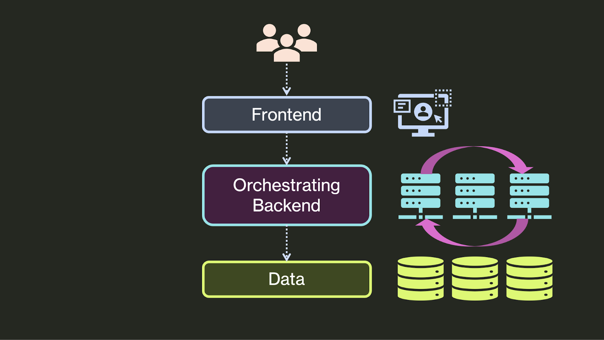
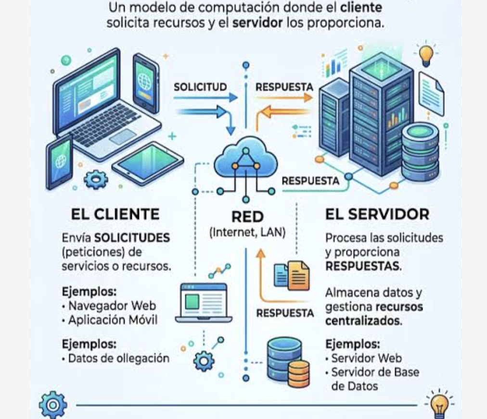
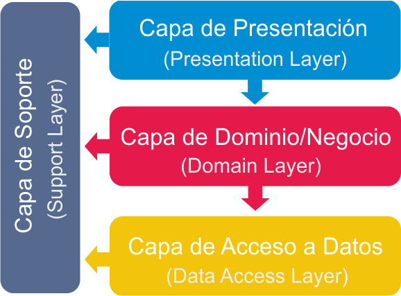
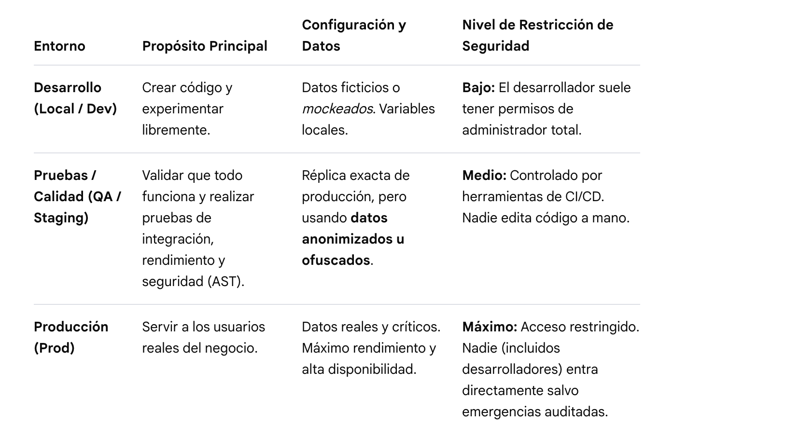

UD1. Del código a producción. ¿Qué significa que una aplicación sea segura?
¿Qué ocurre desde que escribimos código hasta que un usuario utiliza una aplicación?
📚 1. Aplicaciones modernas
Una aplicación o app es un programa informático diseñado para ayudar al usuario a realizar una tarea específica.
Una aplicación moderna combina muchas piezas para ofrecer una experiencia rápida y conectada en cualquier dispositivo:
- Frontend: Es la interfaz visual con la que interactúa el usuario en su pantalla. Se diseña para navegadores web o teléfonos móviles.
- Backend: Es el servidor que procesa las reglas del negocio, la seguridad y las peticiones del usuario de forma oculta.
- Base de datos: Es el sistema seguro donde se guarda toda la información, como perfiles de usuarios, textos o imágenes.
- APIs: Funcionan como un puente de comunicación para que el frontend, el backend y otros servicios externos compartan datos al instante.
Los productos finales los podemos encontrar como aplicaciones web o móviles, por ejemplo.

¿Qué parte tenemos que proteger?
Todas
💻 2. Del código fuente a la ejecución
El código fuente es lo que escribe el desarrollador, por ejemplo:
function login(user, password) {
// ...
}Pero una aplicación no termina aquí. Tenemos:
Código fuente -> Transformación (dependiendo del lenguaje) -> Ejecución -> Aplicación
Lenguajes compilados e interpretados
Lenguajes Compilados
Código fuente → Compilador → Programa ejecutable → Ejecución
Ejemplos: C, C++, Rust, Java (con matices), Kotlin (con matices)
Lenguajes Interpretados
Código fuente → Runtime → Ejecución
JavaScript → Node.js (lado del servidor), navegador web (lado del cliente)
Python → Python runtime
Por ejemplo si JavaScript se puede ejecutar en el lado del servidor o en el navegador web y esto es fundamental tenerlo en cuenta para posteriormente ver cosas como:
- Vulnerabilidades
- Dependencias
- Configuración
- Contenedores
- Servidores…
🍢 Seguridad de lenguajes y runtimes
No todos los lenguajes tienen las mismas características de seguridad
Por ejemplo, en la gestión de memoria, algunos lenguajes permiten trabajar directamente con memoria y otros la gestionan automáticamente.
C/C++: + control ⇒ + responsabilidad.
JS/Python/Java: Gestión automática de la memoria.
Esto no quiere decir que “JavaScript sea seguro”. Un lenguaje puede reducir determinados tipos de errores, pero ninguna tecnologían convierte automáticamente una aplicación en segura.
Por ejemplo, una aplicación JavaScript puede tener:
- XSS (Cross-Site Scripting) es una vulnerabilidad de seguridad informática que permite a un atacante inyectar código malicioso (generalmente JS) en una página web legítima para que se ejecute en el navegador de otros usuarios.
- Problemas de autenticación
- Exposición de secretos
- Dependencias vulnerables
📟 3. Arquitectura y comunicación
Arquitectura cliente-servidor

El Cliente: Es la aplicación o dispositivo del usuario (como un navegador web o una app en el móvil) que inicia la comunicación haciendo peticiones.
El Servidor: Es el equipo o programa remoto con mayores recursos encargado de procesar las solicitudes, gestionar bases de datos y devolver los datos requeridos.
Cómo Funciona
- El usuario interactúa con el cliente y realiza una acción o petición (por ejemplo, entrar a una página web).
- El cliente envía un mensaje a través de la red usando protocolos como HTTP o HTTPS.
- El servidor recibe la petición, hace el trabajo pesado (busca en la base de datos, procesa los datos) y genera una respuesta.
- El servidor envía la información de vuelta al cliente, que se encarga de mostrarla de forma visual en la pantalla.
HTTP y HTTPS
La diferencia principal entre HTTP y HTTPS es que el segundo cuenta con una capa de seguridad y cifrado para proteger los datos, mientras que el primero los transmite de forma abierta.
¿Qué es HTTP?
Significa Hypertext Transfer Protocol (Protocolo de Transferencia de Hipertexto).
Envía la información en texto plano entre el navegador y el servidor.
No ofrece cifrado, por lo que terceros pueden leer o robar los datos fácilmente si los interceptan.
¿Qué es HTTPS?
Significa Hypertext Transfer Protocol Secure (Protocolo de Transferencia de Hipertexto Seguro).
Añade los protocolos de seguridad SSL o TLS para cifrar los datos intercambiados.
Protege la información confidencial, como contraseñas o números de tarjetas de crédito.
Valida la identidad del servidor web para evitar suplantaciones.
HTTPS protege la comunicación pero NO GARANTIZA que la aplicación sea segura.
APIs REST
Un API REST es un conjunto de reglas que permite que diferentes aplicaciones se comuniquen entre sí mediante HTTP/HTTPS.
El acrónimo significa Application Programming Interface (Interfaz de programación de aplicaciones) y REpresentational State Transfer (Transferencia de estado representacional).
Funciona como un puente o traductor para que un sistema pida datos o funciones a otro y obtenga una respuesta clara.
¿Cómo funciona?
Una API REST funciona mediante un modelo de cliente y servidor:
- El cliente: Es quien hace la petición, como una aplicación móvil, una página web o tu navegador.
- El servidor: Es el sistema que recibe la petición, procesa la información en el backend (como buscar en una base de datos) y devuelve un resultado.
Los datos se suelen enviar y recibir en formato JSON, que es un formato de texto ligero.
Request/response
Request (Solicitud / Petición): Es el mensaje que envía el cliente (por ejemplo, tu navegador web) pidiendo un recurso, datos o una acción al servidor. Incluye métodos como GET o POST, cabeceras y datos.
Response: Es el mensaje que el servidor devuelve al cliente tras procesar la solicitud. Incluye un código de estado (como 200 para éxito o 404 para no encontrado) y la información solicitada.
Métodos y códigos básicos
Métodos HTTP básicos (Acciones)
Los métodos indican al servidor qué acción se desea realizar sobre un recurso.
• GET: Solicita datos o información de un servidor. No modifica nada en el servidor, solo lee (por ejemplo, cargar una página web o ver un perfil).
• POST: Envía datos al servidor para crear un nuevo recurso (por ejemplo, registrar un nuevo usuario o publicar un comentario).
• PUT: Envía datos para actualizar por completo un recurso existente. Si no existe, a veces lo crea.
• DELETE: Solicita la eliminación de un recurso específico en el servidor.
• PATCH: Aplica modificaciones parciales a un recurso (a diferencia de PUT, no lo reemplaza entero).
Códigos de estado HTTP básicos (Respuestas)
Los códigos son números de tres dígitos que el servidor devuelve para indicar el resultado de la petición.
Se dividen en grupos según su primer dígito:
🟢 2xx: Éxito (Todo salió bien)
• 200 OK: La petición fue exitosa y el servidor devuelve los datos solicitados.
• 201 Created: La petición fue exitosa y se ha creado un nuevo recurso (común tras un POST).
🟡 3xx: Redirección (Hay que ir a otro lado)
• 301 Moved Permanently: El recurso solicitado se ha mudado de forma permanente a una nueva dirección (URL).
• 302 Found: El recurso está temporalmente en otra dirección.
🔴 4xx: Errores del Cliente (El error está en tu petición)
• 400 Bad Request: El servidor no entiende la petición porque está mal redactada o corrupta.
• 401 Unauthorized: No tienes permiso para ver el recurso; necesitas iniciar sesión.
• 403 Forbidden: El servidor entiende quién eres, pero tienes prohibido el acceso a ese recurso.
• 404 Not Found: El recurso solicitado no existe o no se pudo encontrar en el servidor.
🟣 5xx: Errores del Servidor (El error es de la web/sistema)
• 500 Internal Server Error: El servidor encontró una condición inesperada que le impide cumplir con la petición (un fallo genérico en el código del servidor).
• 503 Service Unavailable: El servidor no está disponible temporalmente, generalmente por mantenimiento o sobrecarga.
JSON
JSON (JavaScript Object Notation) es técnicamente un formato ligero de intercambio de datos basado en texto plano, diseñado para ser fácil de leer y escribir por humanos, y fácil de interpretar y generar por computadoras.
A pesar de que su nombre incluye “JavaScript” y nació como una simplificación de la sintaxis de objetos de ese lenguaje, hoy en día es un estándar completamente independiente del lenguaje y es compatible con prácticamente cualquier tecnología (Python, Java, PHP, C++, etc.).
Estructura técnica
Un archivo o cadena JSON está compuesto exclusivamente por dos estructuras de datos universales:
- Colecciones de pares clave/valor: En la mayoría de los lenguajes, esto se traduce como un objeto, diccionario, hash table o registro.
- Listas ordenadas de valores: En los lenguajes de programación, esto se traduce como un arreglo (array), lista o vector.
Ejemplo
{
"usuario_id": 10543,
"nombre": "Elena",
"es_administrador": false,
"telefonos": [
"+34 600 000 000",
"+34 910 000 000"
],
"configuracion": {
"tema": "oscuro",
"notificaciones": true
},
"ultimo_acceso": null
}Los datos que llegan desde fuera no son confiables
Arquitectura por capas

La arquitectura por capas (o Layered Architecture) es un patrón de diseño de software que consiste en dividir una aplicación en secciones horizontales, donde cada capa tiene un rol y una responsabilidad única. Se fundamenta en el principio de separación de responsabilidades (Separation of Concerns), lo que significa que cada nivel procesa una tarea específica y se comunica únicamente con sus capas adyacentes de manera jerárquica.
Estructura tradicional (arquitectura de 3 capas)
Aunque un sistema puede configurarse con múltiples niveles (N-capas), el modelo estándar de la industria organiza el software en tres capas lógicas esenciales:
- Capa de Presentación (Interfaz de Usuario / UI): Es el punto de contacto directo con el usuario final. Se encarga de capturar las acciones del cliente, enviar los datos a la capa inferior y renderizar de forma visual la información de retorno (páginas web, apps móviles, HTML, etc.).
- Capa de Lógica de Negocio (Capa de Aplicación / BLL): Actúa como el motor del sistema. Modela, calcula y procesa todas las reglas operativas, validaciones y transformaciones de datos requeridas por la empresa. Nunca accede directamente al almacenamiento.
- Capa de Acceso a Datos (Persistencia / DAL): Su único objetivo es gestionar la comunicación con los almacenes de información (bases de datos SQL/NoSQL, archivos físicos o APIs de terceros). Recibe solicitudes de la capa de negocio para extraer, actualizar o eliminar registros.
Regla de acoplamiento cerrado
En una arquitectura limpia por capas, estas operan de forma cerrada. El flujo de datos viaja de forma estrictamente descendente: la capa de presentación solo puede llamar a la de negocio, y la de negocio solo a la de datos. Se prohíbe terminantemente “saltarse” niveles (por ejemplo, que la interfaz de usuario ejecute consultas SQL directas a la base de datos).
Servidores y entornos de ejecución
Mi aplicación funciona en local, ¿qué necesita para funcionar en producción?
Qué funcione en mi ordenador no significa que esté preparada para producción
Ejemplo:
Mi equipo MACOS -> Node.js -> Aplicación
Servidor -> Node.js -> Aplicación
🌗 4. El ecosistema de una aplicación
Componentes (la anatomía del software)
Para proteger un sistema, primero debemos conocer sus partes. Un sistema no es solo un archivo ejecutable; es un conjunto de piezas interconectadas:
- Frontend (Capa de Presentación): El código que se ejecuta en el cliente (navegador, app móvil). Foco de seguridad: Validación de datos en el cliente (que nunca sustituye a la del servidor) y protección contra ataques como XSS (Cross-Site Scripting).
- Backend (Lógica de Negocio y APIs): El núcleo que procesa los datos y gestiona los servicios. Foco de seguridad: Autenticación, autorización (RBAC: control de acceso basado en roles) y sanitización de entradas.
- Almacenamiento y Persistencia (Bases de Datos, Caché): Dónde residen los datos (SQL, NoSQL, Redis). Foco de seguridad: Cifrado en reposo y en tránsito, y prevención de inyecciones (SQLi).
- Servicios Periféricos y Middleware: Pasarelas de pago, servidores de mensajería (RabbitMQ, Kafka) o servicios de identidad (OAuth/OIDC).
Dependencias (el software de terceros)
Hoy en día, más del 80% del código de una aplicación moderna proviene de librerías de código abierto y frameworks (npm, PyPI, NuGet, Maven).
¿Qué es una dependencia?
Código preescrito por terceros que integramos para no reinventar la rueda (ej. Express en Node, SQLAlchemy en Python).
Dependencias Transitivas
Las librerías que tus librerías necesitan. Un riesgo invisible si no se monitoriza.
Riesgos de Seguridad Asociados
- Vulnerabilidades conocidas (CVEs): Fallos de seguridad descubiertos en versiones antiguas de una librería.
- Ataques a la Cadena de Suministro (Supply Chain Attacks): Inyección de código malicioso en repositorios públicos por el secuestro de la cuenta de un desarrollador legítimo.
Buenas Prácticas de Producción Segura
Uso de herramientas SCA (Software Composition Analysis) como npm audit, Snyk o OWASP Dependency-Check integradas en el pipeline.
Fijar versiones exactas (lockfiles) para evitar sorpresas en el despliegue.
Entornos de desarrollo, pruebas y producción
Una regla de oro en la puesta en producción segura es el aislamiento. El software debe pasar por distintas “cajas de arena” (sandbox) antes de llegar al usuario final.

Conceptos clave de la seguridad en entornos
- Principio de Menor Privilegio: Los desarrolladores no deben tener acceso a las credenciales ni a las bases de datos de producción.
- Gestión Segura de Secretos: Prohibido guardar contraseñas, tokens de API o claves criptográficas en el código fuente (Git). Se deben inyectar en tiempo de ejecución usando gestores de secretos (Vault, AWS Secrets Manager, GitHub Secrets).
- Paridad de Entornos: Los entornos de QA y Producción deben ser lo más idénticos posibles (mediante Contenedores/Docker e Infraestructura como Código - IaC) para evitar el clásico “en mi máquina sí funcionaba”.
⛑️ Primera aproximación a la seguridad
Hasta ahora hemos estudiado cómo funciona una aplicación. Ahora vamos a empezar a preguntarnos qué puede salir mal.
¿Podemos confiar en los datos?
En el Laboratorio 2 hemos observado:
Navegador
│
│ HTTP Request
▼
Backend
│
│ Response
▼
Navegador¿Podemos confiar en lo que envía el navegador?
Una aplicación nunca debe asumir que los datos que recibe son correctos o confiables
Entradas externas
Una entrada externa es cualquier información que llega a nuestra aplicación desde fuera de la parte del sistema que estamos considerando confiable.
Por ejemplo:
Usuario
↓
Formulario
↓
Frontend
↓
Backend
↓
Base de datosEl usuario puede introducir:
Nombre: Ana
Edad: 25Pero también podría enviar:
Nombre: <algo inesperado>
Edad: abcO directanmente manipular la petición HTTP.
Por ejemplo:
POST /api/tasks
Content-Type: application/json{
"title": "Preparar examen",
"priority": "alta"
}El frontend puede tener:
if (!["alta", "media", "baja"].includes(priority)) {
// error
}Pero esto no significa que el backend esté protegido.
Un usuario puede abrir DevTools y modificar la petición antes de enviarla.
Hay una distinción fundamental:
Validación del frontend que sirve principalmente para:
- mejorar la experiencia de usuario
- detectar errores
- evitar peticiones innecesarias
- ayudar al usuario
Pero no es una frontera de seguridad.
Validación del backend que es la que debe asumir que el dato puede haber sido manipulado.
Por ejemplo:
Frontend
↓
"priority = alta"
↓
HTTP
↓
Backend
↓
¿priority es realmente un valor permitido?
↓
Sí → continuar
No → rechazarFrontera de confianza/Trust boundary
Es una línea imaginaria o arquitectónica que separa dos zonas de una aplicación con distintos niveles de confianza, privilegios o controles de seguridad.
Es el control de acceso o aduana donde los datos pasan de un entorno en el que no tienes control (no confiable) a un entorno que tú gestionas y consideras seguro (confiable).
FRONTERA
↓
┌─────────────────────────────┐
│ NUESTRO SISTEMA │
│ │
│ Backend │
│ ↓ │
│ Database │
└─────────────────────────────┘
↑
│
datos externos
│
Usuario / InternetTodo lo que atraviese esta frontera debe considerarse no confiable
Cruzar la frontera exige verificación
Cuando un dato cruza una frontera de confianza de una zona de menor confianza a una de mayor confianza, nunca puede pasar libremente. Debe ser validado, sanitizado o autenticado inmediatamente en el punto de entrada.
Si permitimos que un dato cruce la frontera sin verificarlo, se produce una vulnerabilidad, ya que el sistema interno asumirá que el dato es seguro por el simple hecho de estar “dentro”.
Ejemplos de fronteras de confianza
- Entre el navegador (cliente) y la API (servidor): esta es la frontera más crítica. El navegador está en la zona “no confiable” (el dispositivo del usuario) y la API está en la zona “confiable” (tu centro de datos o nube).
- Entre la aplicación y la base de datos: aunque ambos servidores estén en tu red privada, la base de datos es una zona con un nivel de privilegio distinto. Los datos que la aplicación envía a la base de datos deben cruzar una frontera mediante consultas preparadas (para evitar SQLi).
- Entre tu servidor y APIs de terceros: si tu aplicación consume datos de un servicio externo (por ejemplo, la API del clima o un sistema de pasarela de pagos), estos datos provienen de una zona fuera de tu control y deben validar antes de procesarse.
- Entre microservicios: en arquitecturas modernas, un microservicio de cara al público (BFF (Backend For Frontend)) tiene menos privilegios que un microservicio interno de procesamiento de pagos. La comunicación entre ellos cruza una frontera de confianza que requiere tokens de autenticación (como JWT (JSON Web Token) que es un estándar que permite intercambiar información de identidad entre un cliente y un servidor de forma segura, compacta y autocontenida, llevando el porpio token toda la información necesaria sobre el usuario y sus permisos, sin que el servidor tenga que buscar nada en una BDD o en la memoria para validar la petición).
Ejemplo:
[ ZONA NO CONFIABLE ] || [ ZONA CONFIABLE ]
Dispositivo del Usuario || Servidor / Backend
||
Fichero: "malware.exe.jpg" =====||=====> [PUNTO DE ENTRADA / ADUANA]
|| - ¿Es realmente una imagen?
|| - ¿El tamaño es correcto?
|| - ¿Se cambia el nombre a un UUID?
||
|| Si pasa: Se guarda en el sistema.
|| Si falla: Se destruye el flujo.
||
FRONTERA DE CONFIANZA¿Qué cosas pueden ser entradas externas?
| Entrada | Ejemplo |
|---|---|
| Formulario | nombre, email |
| URL | /users/123 |
| Query parameter | ?page=3 |
| JSON | cuerpo de una petición |
| Cabeceras HTTP | Authorization, User-Agent |
| Cookies | sesión |
| Ficheros | imagen subida |
| API externa | datos recibidos |
| Webhook | evento externo |
| Prompt | texto enviado a un LLM |
| Datos de móvil | ubicación, texto, fichero |
| Mensaje | WebSocket, chat |
Observación principal: el navegador es del usuario
Puntos fundamentales: - Toda entrada externa puede ser manipulada - El usuario controla el cliente - El frontend no es una frontera de seguridad - El servidor siempre debe validar lo que recibe
Superficie de ataque
¿Por dónde podrían atacar nuestra aplicación?
Si existen entradas externas, ¿cuáles son todos los puntos por los que alguien puede interactuar con nuestra aplicación?
Aquí entra en juego el concepto de Superficie de Ataque.
Una superficie de ataque es el conjunto de puntos de entrada, interfaces, componentes y funcionalidades que podrían ser utilizados para interactuar con un sistema y potencialmente atacarlo.
Pensad en una casa. No sólo existe la puerta principal. Hay ventanas, garaje terraza, tejado… Cada uno puede convertirse en un punto de entrada.
Por ejemplo, en una aplicación típica:
APLICACIÓN
│
┌───────────┼───────────┐
↓ ↓ ↓
Frontend API Admin
│ │ │
Formularios Endpoints Panel
│
Database### Conceptos principales
Activo
Algo que queremos proteger. Por ejemplo: contraseña, datos personales, información médica, dinero, tokens, código fuente, datos de clientes…
Datos personales sería un activo.
Punto de entrada
Lugar por donde algo externo puede entrar. Ejemplos: formulario, endpoint, URL, fichero, cookie, API, prompt…
POST /api/users sería un punto de entrada.
Componente
Una pieza del sistema. Ejemplo: frontend, backend, Node.js, PostgreSQL, Redis, librerías, servidor, proveedor LLM…
PostgreSQL sería un componente.
Dibujamos la superficie de ataque
Podemos tener una plantilla similar a esta:
MI APLICACIÓN
│
┌───────────────┼────────────────┐
↓ ↓ ↓
CLIENTE API OTROS
│ │
↓ ↓
Formularios Endpoints
URLs Parámetros
Cookies JSON
│ │
└───────┬───────┘
↓
BACKEND
│
┌──────┴──────┐
↓ ↓
DATABASE SERVICIOSPara identificar todos los puntos de una aplicación donde entra información externa, por ahora podríamos utilizar:
- Código fuente
- DevTools
- Arquitectura definida en documentación
- Documentación de APIs correspondiente…
Podemos tener una tabla de trabajo similar a esta:
| Punto | ¿Qué entra? | ¿Quién lo controla? | ¿Qué podría salir mal? |
|---|---|---|---|
| Login | usuario/password | usuario | datos incorrectos |
/api/tasks |
JSON | usuario | datos inesperados |
| URL | ID | usuario | ID no válido |
| Fichero | imagen | usuario | fichero malicioso |
| Cookie | sesión | navegador | manipulación |
De momento no necesitamos saber explotar estos problemas, pero sí VERLOS
Seguridad desde el diseño
La seguridad debe formar parte del diseño de la aplicación y no ser un parche posterior
Ejemplo Aplicación Citas Médicas
Tenemos: - pacientes - médicos - administradores
Un paciente puede:
- Ver sus citas
- Cancelar sus citas
Un médico puede:
- Ver sus pacientes
- Consultar sus citas
Un administrador puede:
- Gestionar usuarios
Pregunta: ¿Cuándo debemos pensar en seguridad?
OPCIÓN A
Diseñamos
↓
Programamos
↓
Terminamos
↓
Probamos
↓
"Oh, ahora vamos a poner seguridad"OPCIÓN B
ITERACIÓN
│
↓
┌─────────────┐
│ NECESIDAD │
└──────┬──────┘
↓
DISEÑO
↓
DECISIONES DE
SEGURIDAD
↓
DESARROLLO
↓
TESTING
↓
APRENDIZAJES
│
└───────────→ siguiente iteraciónLa segunda sería Security by Design
Hablamos de iteraciones si conectamos con metodologías agile.
¿Qué significa realmente?
No significa hacer hacking durante el diseño(hacer pruebas de ataque sobre una aplicación), significa incorporar preguntas de seguridad en las decisiones iniciales
Por ejemplo:
Datos
¿Qué datos almacenamos? ¿Cuáles son especialmente sensibles?
Nombre
Email
Historial médicoUsuarios
¿Quién utiliza la aplicación?
Paciente
Médico
AdministradorAutorización
¿Qué puede hacer cada uno?
Paciente -> Sus citas
Médico -> Citas de sus pacientes
Administrador -> GestiónEntradas
¿Qué información recibimos?
Login
Formulario
ID de cita
Fichero
APIErrores
¿Qué ocurre si algo falla?
Mostramos:
Error: database connection failed at 192.168.1.25O algo genérico como:
Se ha producido un error.Threat Modeling / Modelado de amenazas
Threat modeling consiste en pensar de forma estructurada qué podría salir mal antes de construir el sistema.
Por ahora podemos utilizar esta plantilla:
ACTIVO
↓
¿Quién puede atacarlo?
↓
¿Por dónde puede entrar?
↓
¿Qué podría hacer?
↓
¿Qué consecuencia tendría?
↓
¿Qué control podemos diseñar?Ejemplo:
Activo:
Tareas privadas
Entrada:
GET /api/tasks/123
Problema:
Un usuario cambia 123 por 124
Consecuencia:
Puede consultar una tarea ajena
Decisión de diseño:
El servidor debe comprobar que
la tarea pertenece al usuario.Antes de programar, debo preguntarme qué puede salir mal, esto es Security by Design
🤖 Nuevas aplicaciones
¿Qué ocurre cuando metemos un LLM?
Un LLM (Large Language Model) o modelo de lenguaje de gran tamaño es un modelo de IA entrenado con grandes cantidades de texto que puede procesar y generar lenguaje natural. Ejemplos: GPT, Claude, Gemini, Llama…
LLM no es una aplicación completa. Es un componente que podemos integrar dentro de una aplicación
Debemos entender que añadir IA generativa introduce nuevos componentes, comunicaciones, datos y superficies de ataque
Algunos conceptos
Prompt engineering
Es diseñar las instrucciones que damos a un modelo para obtener respuestas más útiles, consistentes y adecuadas a nuestro objetivo.
El prompt proporcionado por el usuario es una entrada externa y no debemos asumir que es confiable. El usuario puede intentar introducir instrucciones que hagan que el modelo se comporte de una manera distinta de la prevista por el desarrollador (prompt injection).
Embeddings
Un embedding es una representación numérica de información, normalmente un texto, que intenta capturar aspectos de su significado.
"Quiero aprender Python"Se transforma en:
[0.21, -0.73, 0.14, 0.82, ...]Textos con significados relacionados tienden a tener representaciones vectoriales cercanas
Por ejemplo:
"Quiero aprender Python"
↕
"Curso de programación en Python"Tendrán embeddings relacionados.
RAG (Retrieval Augmented Generation)
Generación aumentada mediante recuperación.
En lugar de pedir al LLM que responda únicamente utilizando lo que aprendió durante su entrenamiento, nuestra aplicación busca información relevante y se la proporciona al modelo como contexto.
Por ejemplo, imagina que quieres crear un asistente sobre tu material sobre PPS.
Sin RAG:
Usuario
↓
LLM
↓
RespuestaCon RAG:
┌──→ Documentos
│
Usuario → pregunta → búsqueda
│
↓
contexto
↓
LLM
↓
respuestaUna implementación típica sería:
Documentos
↓
Dividir documentos
↓
Embeddings
↓
Base de datos vectorialCuando llega una pregunta:
Pregunta
↓
Embedding de la pregunta
↓
Búsqueda de documentos similares
↓
Fragmentos relevantes
↓
LLM
↓
RespuestaEsto es interesante a nivel de seguridad porque aparecen muchos componentes nuevos:
Usuario
↓
Aplicación
↓
Vector DB
↓
Documentos
↓
LLMY nuevas preguntas:
¿Qué documentos puede recuperar el usuario?
¿Puede acceder a documentos de otro usuario?
¿Qué información enviamos al LLM?
¿Podemos confiar en los documentos?
¿Qué ocurre si un documento contiene instrucciones maliciosas?
Aquí empiezas a ver cómo la arquitectura de IA aumenta la superficie de ataque.
Agentes
Un chatbot tradicional podría ser:
Usuario
↓
Prompt
↓
LLM
↓
RespuestaUn agente puede tener:
┌──→ Base de datos
│
Usuario → LLM ───┼──→ API
│
├──→ Calendario
│
└──→ EmailUn agente utiliza un modelo para decidir qué acciones realizar utilizando herramientas externas
Un LLM que simplemente responde:
"El viernes tienes una reunión."tiene unas capacidades.
Pero un agente que puede:
consultarCalendario()
crearEvento()
enviarEmail()
eliminarTarea()tiene capacidad de actuar.
Cuantas más capacidades damos a un componente de IA, mayor es la superficie de ataque y mayor debe ser el control sobre sus permisos.
Fine-tuning
Consiste en entrenar/adaptar un mnodelo previamente entrenado utilizando datos adicionales para modificar su comportamient hacia una tarea o dominio concreto.
Conceptualmente:
Modelo base
+
datos específicos (fine-tuning)
↓
modelo adaptadoMediante prompt engineering no se modifica el modelo, mediante RAG tampoco porque le estamos dando la información externa en el momento de responder pero con fine-tuning sí modificamos/adaptamos el comportamiento mediante entrenamiento adicional.
Nuestra aplicación sin LLM tendría una estructura similar a esta:
USUARIO
↓
FRONTEND
↓
BACKEND
↓
DATABASE¿Qué componentes tenemos?
Añadiendo un LLM
USUARIO
↓
FRONTEND
↓
BACKEND
↓
LLMy quizá:
┌──→ DATABASE
│
USUARIO → BACKEND → LLM
│
└──→ HERRAMIENTASHemos añadido otros elementos:
- otro servicio
- otra comunicación
- nuevos datos
- prompts
- respuestas generadas
- credenciales/API keys
- proveedor externo
- posiblemente herramientas
¿Por qué esto afecta a la seguridad?
Imagina:
Usuario
↓
"Resume mis tareas"
↓
Backend
↓
LLMAhora el LLM puede recibir información que antes no existía en el flujo.
Por ejemplo:
Usuario:
"Resume mis tareas"
Aplicación:
Aquí están sus tareas:
- Comprar leche
- Preparar examen
- ...¿Qué pasa si esas tareas contienen información privada?
¿Qué datos estamos enviando al modelo?
Aclaración sobre el concepto de modelo: un modelo es un sistema que ha aprendido patrones a partir de datos y que utiliza este conocimiento aprendido para producir una salida cuando recibe una entrada.
El prompt es una entrada externa
Esta es probablemente la idea más importante de este tipo de aplicaciones:
Formulario → entrada externa
URL → entrada externa
JSON → entrada externa
Prompt → entrada externaEl usuario podría escribir:
"Resume mis tareas"Pero también podría introducir instrucciones que cambien el comportamiento esperado.
Un LLM no debe recibir automáticamente la confianza que nosotros damos a nuestro código
Los prompts proporcionados por los usuarios deben considerarse entradas no confiables